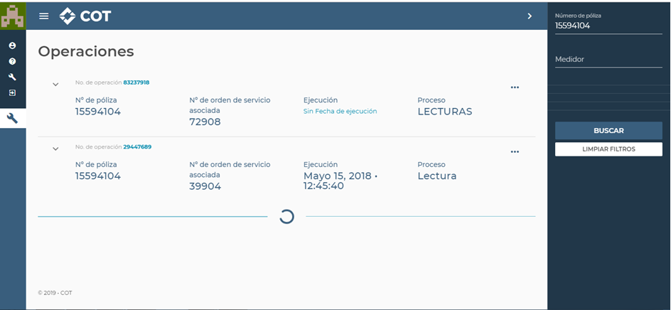
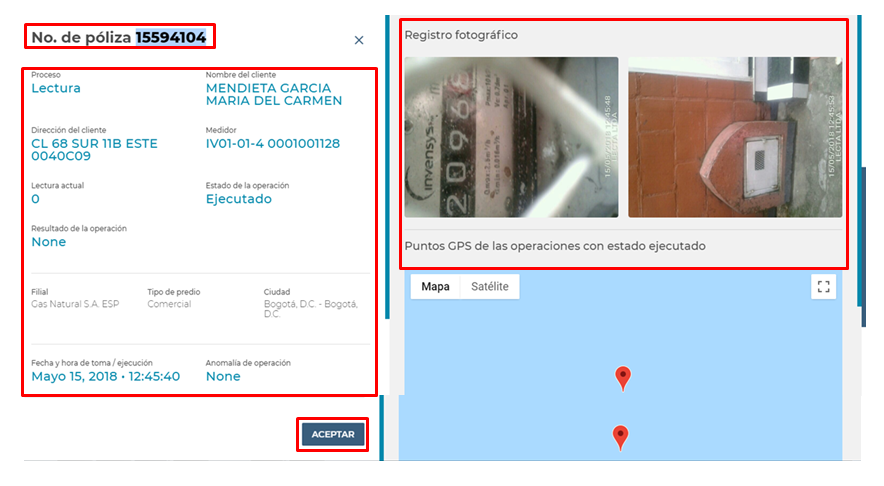

En este aplicativo se pueden validar detalles de la cuenta, resultado de la operación, registro fotográfico, técnico en terreno y soportes de las operaciones que hayan realizado.


Al ingresar visualizarás la siguiente interfaz. En la esquina superior derecha, podrás realizar la búsqueda requerida:
Luego de la consulta, la información que arrojará el aplicativo, la visualizarás de la siguiente manera:
✅Número de póliza.
✅Proceso.
✅Nombre del cliente.
✅Dirección del cliente.
✅Estado de la operación.
✅Resultado de la operación.
✅Filial.
✅Fecha y hora de toma / ejecución.
✅Registro fotográfico en terreno.

Anímate a consultar las siguientes guías operativas para conocer más de COT: